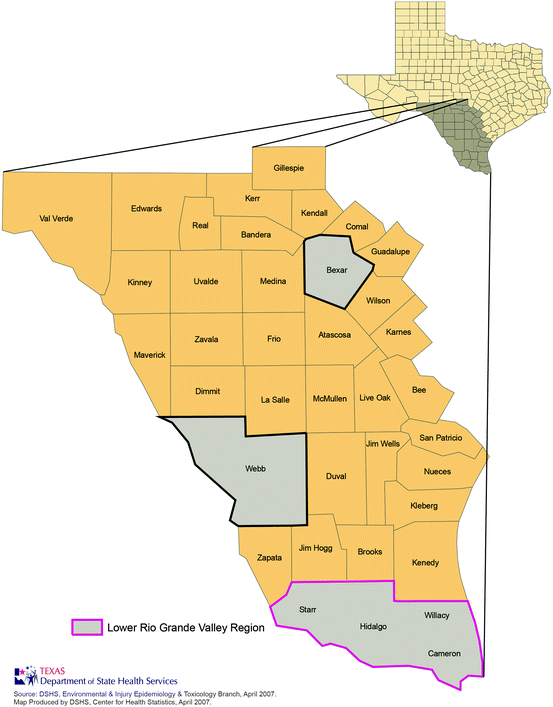
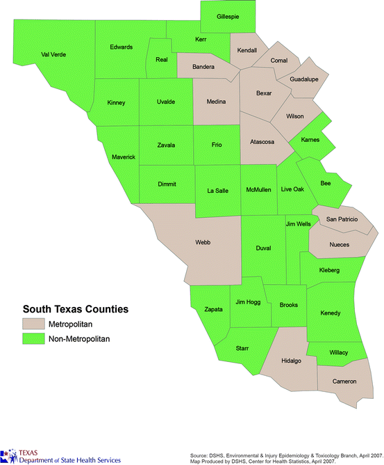

The majority of individuals in South Texas are of Hispanic ethnicity (68.9 % in 2010) [1]. Hispanics typically face a number of barriers to health care including economic, cultural, and institutional barriers. Inadequate access to health care may lead to disparities in health outcomes [2, 3].
This report focuses on the health of South Texas residents by analyzing nearly 40 health status indicators to determine if disparities exist either between South Texans and those residing in the nation, the rest of Texas or among different populations within South Texas. The indicators in this document measure health status, mortality, and behavioral factors that might heighten individuals’ risk of disease or premature mortality.
Overview
In this chapter, South Texas is defined as a 38-county, 45,926-square-mile area (Fig. 1.1) [4]. The area contains many counties along the Texas–Mexico border, from Cameron County (in southernmost Texas) northwest to Val Verde County. The area also contains Bexar County (including San Antonio), Webb County (including Laredo), and the Lower Rio Grande Valley (a group of four counties—Cameron, Willacy, Hidalgo, and Starr—that were sometimes analyzed separately from the rest of South Texas).

Fig. 1.1
Map of the 38-county South Texas study area
Of the 38 counties covered in this chapter, 13 are considered metropolitan and 25 are considered nonmetropolitan (Fig. 1.2). A metropolitan county has a core urban area with a population of 50,000 or more. Any adjacent counties with a high degree of economic and social integration with the core urban area are also designated metropolitan [5]. Counties not meeting these criteria are designated nonmetropolitan.

Fig. 1.2
Map of metropolitan and nonmetropolitan counties in South Texas, as designated by the U.S. Office of Management and Budget, 2003, OMB Bulletin No. 03–04
In 2011, almost 4.5 million people resided in South Texas. Estimated county populations ranged from 470 residents in Kenedy County to more than 1.6 million in Bexar County [1]. The average population density for South Texas was 268.8 persons per square mile in metropolitan counties and 17 persons per square mile in nonmetropolitan counties [1, 4].
Study Goals
The goal of this study is to examine a number of health status indicators to determine if disparities exist between the South Texas population and the population in the rest of Texas, between South Texas and the nation, and/or among South Texas subpopulations. This study identifies possible health disparities and makes recommendations about where to focus public health efforts.
The health status indicators analyzed in this chapter are listed in Table 1.1. These health status indicators were chosen because of potential disparities between the South Texas area and the rest of Texas and nation, and, more importantly, because prevention strategies exist for most of these indicators.
Table 1.1
List of health status indicators analyzed in this document
Health status indicators | ||
|---|---|---|
Communicable diseases
|
Cancer incidence/mortality
|
Maternal and child health
|
Tuberculosis | Breast cancer | Prenatal care |
HIV/AIDS | Cervical cancer | Preconception health care |
Syphilis | Colorectal cancer | Unintended pregnancy |
Gonorrhea Chlamydia | Prostate cancer Lung cancer | Preconception overweight and obesity |
Liver cancer | Birth defects | |
Infant mortality | ||
Chronic diseases
| Stomach cancer | |
Diabetes | Gallbladder cancer |
Behavioral risk factors
|
Heart disease mortality | Child/adolescent leukemia | Obesity |
Stroke mortality | Nutrition | |
Asthma |
Injury
| Physical activity |
Motor vehicle crash mortality | Smoking behaviors | |
Environmental factors
| Homicide | Alcohol use |
Childhood lead poisoning | Suicide | Cancer screening |
Pesticide exposures | ||
References
1.
Texas Department of State Health Services. Texas health data: population. http://soupfin.tdh.state.tx.us/pop2000a.htm. Accessed June 2012.
2.
US Department of Health and Human Services, Agency for Healthcare Research and Quality. National healthcare disparities report. 2011. AHRQ Publication No. 12–0006. 2012.
3.
4.
United States Census Bureau. State and county quickfacts – Texas. http://quickfacts.census.gov/qfd/states/48000.html. Accessed June 2012.
5.
Office of Information and Regulatory Affairs, Office of Management and Budget, Executive Office of the President. Office of Management and Budget: 2010 standards for defining metropolitan and micropolitan statistical areas. Fed Regist. 2010;75:37246–52.